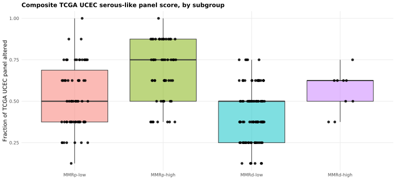
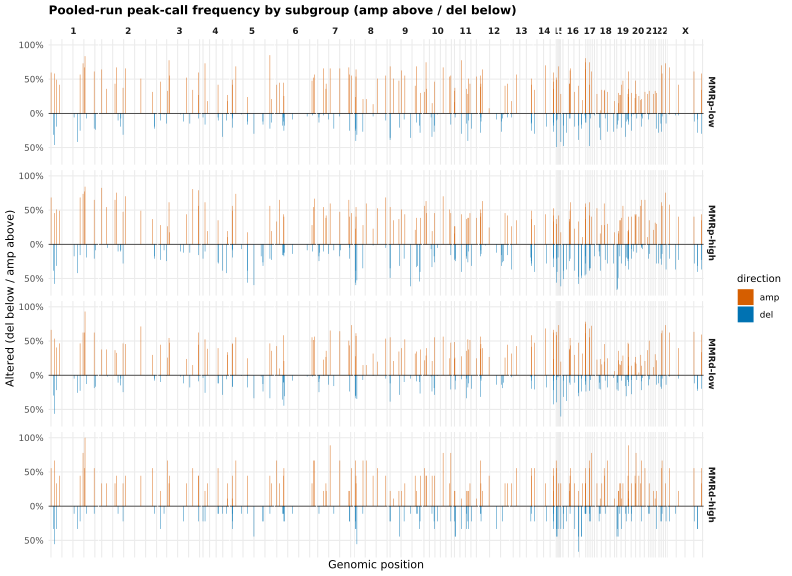

ATTEND — 33. Mutation landscape and copy number
sceriff0
2026-08-13
Last updated: 2026-08-13
Checks: 7 0
Knit directory:
attend_aneuploidy/analysis/
This reproducible R Markdown analysis was created with workflowr (version 1.7.2). The Checks tab describes the reproducibility checks that were applied when the results were created. The Past versions tab lists the development history.
Great! Since the R Markdown file has been committed to the Git repository, you know the exact version of the code that produced these results.
Great job! The global environment was empty. Objects defined in the global environment can affect the analysis in your R Markdown file in unknown ways. For reproduciblity it’s best to always run the code in an empty environment.
The command set.seed(20260622) was run prior to running
the code in the R Markdown file. Setting a seed ensures that any results
that rely on randomness, e.g. subsampling or permutations, are
reproducible.
Great job! Recording the operating system, R version, and package versions is critical for reproducibility.
Nice! There were no cached chunks for this analysis, so you can be confident that you successfully produced the results during this run.
Great job! Using relative paths to the files within your workflowr project makes it easier to run your code on other machines.
Great! You are using Git for version control. Tracking code development and connecting the code version to the results is critical for reproducibility.
The results in this page were generated with repository version 1592d06. See the Past versions tab to see a history of the changes made to the R Markdown and HTML files.
Note that you need to be careful to ensure that all relevant files for
the analysis have been committed to Git prior to generating the results
(you can use wflow_publish or
wflow_git_commit). workflowr only checks the R Markdown
file, but you know if there are other scripts or data files that it
depends on. Below is the status of the Git repository when the results
were generated:
Ignored files:
Ignored: .Rhistory
Ignored: .Rproj.user/
Ignored: data/aneu_scores.csv
Ignored: data/attend_barcodes.csv
Ignored: data/attend_data.xlsx
Ignored: data/clinical_gianlu_data.csv
Ignored: data/cnv_annotations/
Ignored: data/gistic/
Ignored: data/hrd_scores.csv
Ignored: data/msi_scores.csv
Ignored: data/old_gistic/
Ignored: data/seg/
Ignored: data/tcga_2013/
Ignored: data/tmb_scores.csv
Ignored: data/variant_annotations/
Ignored: output/clean_data/
Unstaged changes:
Modified: .gitignore
Note that any generated files, e.g. HTML, png, CSS, etc., are not included in this status report because it is ok for generated content to have uncommitted changes.
These are the previous versions of the repository in which changes were
made to the R Markdown (analysis/07-mutation-and-cna.Rmd)
and HTML (docs/07-mutation-and-cna.html) files. If you’ve
configured a remote Git repository (see ?wflow_git_remote),
click on the hyperlinks in the table below to view the files as they
were in that past version.
| File | Version | Author | Date | Message |
|---|---|---|---|---|
| Rmd | 1592d06 | bolt3x | 2026-08-13 | :sparkles: Add report 06-response, fix duplicate chunk labels, renumber 07-09 |
Question. What is altered across this cohort — in genes, in chromosome arms, and along the genome — and does recurrence differ between aneuploidy-high MMRd and MMRp tumours? Cohort. All 245 patients for Parts 1 and 2; Part 3 is a contrast, MMRd-high (n = 9) against MMRp-high. Reads. The per-sample MAFs, ASCETS arm calls, ClassifyCNV segments, and GISTIC peaks. Out of scope. The TCGA cascade -> 09-tcga-classification. Aneuploidy within MMRd -> 05-aneuploidy-mmrd.
Three resolutions of one question, coarsest last. Plot conventions follow TCGA UCEC (Kandoth et al., Nature 2013); the rationale for each is in 00-methods. Parts 1 and 2 are descriptive frequencies with no significance testing — GISTIC 2.0 q-values are the field’s standard for recurrence significance and are not applied to these figures.
maftools is not installed, so the oncoplots are skipped.
Install with renv::install("bioc::maftools") and re-knit.
The copy-number parts do not need it.
Part 1 — the mutation landscape
Oncoplots follow the TCGA UCEC conventions (Kandoth et al., Nature 2013, papers/nature12113.pdf): patients on the horizontal axis, genes stacked vertically, covariates as annotation bars, and a per-subgroup frequency comparison matching their Fig. 2d. The rationale for each convention is in 00-methods.
The oncoplot annotation carries exactly those two TMB tracks, so reading the two rows against each other shows directly whether the germline correction moves any patient across the TMB-high/low boundary.
maftools is not installed, so the mutation plots below
are skipped. Install with renv::install("bioc::maftools")
(Bioconductor 3.18) and re-knit.
Building the annotated MAF
Every per-sample MAF in data/variant_annotations/ is read into one object. Tumor_Sample_Barcode is taken from the file name and translated to pid through the same barcode crosswalk 01-data-integration used, then the per-patient covariate classes are attached as maftools clinicalData so they can be drawn as annotation tracks.
Watch the mapped-sample count printed at the end: samples that fail to map carry no covariates and will appear with blank annotation bars.
cw <- build_barcode_pid(load_gianlu_clinical_data(), make_id_cfg())
maf_long <- load_maf_long()
# TMB annotation tracks: the two definitions the pipeline plots, nothing else.
# All-NA definitions (ancestry corrected before clinical_col is set) are dropped.
tmb_defs05 <- tmb_defs_present(master)
tmb_defs05 <- tmb_defs05[vapply(tmb_defs05, function(col) any(!is.na(master[[col]])), logical(1))]
tmb_labs05 <- tmb_def_labels(tmb_defs05)
# Track names, not internal names: maftools prints clinicalFeatures column names onto
# the oncoplot itself, so these become visible axis labels.
tmb_cls05 <- tmb_def_track_names(tmb_defs05)
for (i in seq_along(tmb_defs05))
master[[tmb_cls05[i]]] <- tmb_class_of(master[[tmb_defs05[[i]]]])
# Recurrent arm-level CNV as annotation tracks: the top `attend_cnv$oncoplot_arms`
# most-altered chromosome arms (ASCETS calls) become gain/loss/neutral rows per patient.
# Knit-safe: no ASCETS data -> cnv_cls05 stays empty and the oncoplot is mutation-only.
cnv_cls05 <- character(0)
arm_rec <- recurrent_arm_calls(load_ascets_calls(), n_top = attend_cnv$oncoplot_arms)
if (!is.null(arm_rec) && nrow(arm_rec$wide_top) > 0) {
arm_by_pid <- arm_rec$wide_top |>
mutate(pid = cw$pid[match(ID, cw$barcode)]) |>
filter(!is.na(pid)) |>
select(pid, starts_with("CNV_"))
master <- left_join(master, arm_by_pid, by = "pid")
cnv_cls05 <- intersect(paste0("CNV_", arm_rec$top_arms), names(master))
}
clin <- maf_long |>
distinct(Tumor_Sample_Barcode) |>
mutate(pid = cw$pid[match(Tumor_Sample_Barcode, cw$barcode)]) |>
left_join(master |> select(pid, aneuploidy_class, all_of(tmb_cls05),
MSI_class, MMR_class, all_of(cnv_cls05)),
by = "pid") |>
select(Tumor_Sample_Barcode, aneuploidy_class, all_of(tmb_cls05),
MSI_class, MMR_class, all_of(cnv_cls05))
# GISTIC2 focal peaks, if present, overlay gene-level amp/del directly in the mutation
# grid — the TCGA-standard focal layer. maftools::readGistic REQUIRES all four files and
# hard-stops if any is missing, so only take the overlay branch when all four are found.
gx <- find_gistic_files()
gistic_ok <- !is.null(gx) && !any(vapply(gx, is.null, logical(1)))
maf <- if (gistic_ok) {
maftools::read.maf(maf = maf_long, clinicalData = clin,
gisticAllLesionsFile = gx$all_lesions,
gisticAmpGenesFile = gx$amp_genes,
gisticDelGenesFile = gx$del_genes,
gisticScoresFile = gx$scores, verbose = FALSE)
} else {
maftools::read.maf(maf = maf_long, clinicalData = clin, verbose = FALSE)
}
cat("samples mapped to a pid:", sum(!is.na(clin$pid)), "/", nrow(clin),
"\nTMB tracks:", paste(tmb_labs05, collapse = " | "),
"\nrecurrent CNV arms annotated:", length(cnv_cls05),
"\nGISTIC focal overlay:", gistic_ok, "\n")
mafCohort mutation summary
The standard maftools dashboard: variant classification and type counts, the transition/transversion split, per-sample mutation burden, and the most frequently mutated genes. This is the descriptive baseline — read it before the oncoplot to know which variant classes dominate, since that drives what the oncoplot colours show.
maftools::plotmafSummary(maf, addStat = "median", dashboard = TRUE)Oncoplot — mutation landscape (memo-sorted)
Columns are patients, rows are genes, and the coloured cells are mutation types. The default maftools memo sort: samples are ordered so co-occurring and mutually exclusive alterations form the characteristic staircase, the primary mutation-landscape layout readers expect from an OncoPrint. The annotation-sorted panel below answers a different question — where alterations concentrate within a covariate — not this one.
covar <- c("aneuploidy_class", tmb_cls05, "MSI_class", "MMR_class", cnv_cls05)
maftools::oncoplot(maf, top = 20, clinicalFeatures = covar,
sortByAnnotation = FALSE, removeNonMutated = FALSE)Oncoplot — sorted by annotation (enrichment view)
Samples are sorted by the annotation tracks rather than by mutation burden, so enrichment shows up as a block of colour lining up with an annotation band — TP53 concentrating in aneuploidy-high, or hypermutation concentrating in MMR-deficient, for example.
removeNonMutated = FALSE keeps unmutated patients in the figure, so the percentages down the side are out of the whole cohort, not out of mutated patients only.
covar <- c("aneuploidy_class", tmb_cls05, "MSI_class", "MMR_class", cnv_cls05)
maftools::oncoplot(maf, top = 20, clinicalFeatures = covar,
sortByAnnotation = TRUE, removeNonMutated = FALSE)Oncoplot — the configured gene panels
The same figure restricted to the genes this pipeline tracks by name: the MMR panel (PMS2, MLH1, MSH2, MSH6, MSH3), the Wnt / β-catenin genes (CTNNB1, APC), and TP53. Genes absent from the MAF entirely are dropped by the intersection below rather than drawn as empty rows.
panel_genes <- unique(c(attend_genes_per_gene, "TP53"))
panel <- intersect(panel_genes, as.character(maftools::getGeneSummary(maf)$Hugo_Symbol))
if (length(panel) > 0) {
maftools::oncoplot(maf, genes = panel, clinicalFeatures = covar,
sortByAnnotation = TRUE, removeNonMutated = FALSE)
} else {
message("None of the configured panel genes are mutated in this cohort.")
}Mutation frequency by subgroup — the TCGA Fig. 2d view
This is the figure the oncoplot cannot give you. An oncoplot shows which patients are mutated; it does not say whether a gene is mutated at a different rate between subgroups, and it offers no multiple-testing control.
Following TCGA Fig. 2d, each gene’s mutation frequency is computed within each subgroup and the subgroups are shown side by side. The subgroups are the four scna_group strata — MMR status crossed with aneuploidy class — which is the split the rest of this report and the classification report use.
The test. For each gene, a Fisher exact test across the subgroups, then Benjamini–Hochberg FDR across the genes tested. Genes reaching FDR < 0.05 are marked with an asterisk, exactly as TCGA marks them. Only genes mutated in at least min_mut patients are tested — testing a gene mutated once produces noise, not a result.
Frequencies are within-group: the denominator is that subgroup’s own patient count, so a small subgroup shows large jumps per patient. Group sizes are printed with the table.
min_mut <- 3 # a gene must be mutated in at least this many patients to be tested
top_freq <- 25 # genes shown, ranked by overall mutation frequency
master_grp <- add_scna_group(master) # mmr_group + scna_group (MMR x aneuploidy)
mut_by_pid <- maf_long |>
mutate(pid = cw$pid[match(Tumor_Sample_Barcode, cw$barcode)]) |>
filter(!is.na(pid)) |>
distinct(pid, Hugo_Symbol)
grp_tbl <- master_grp |>
filter(!is.na(scna_group)) |>
select(pid, scna_group) |>
mutate(scna_group = factor(scna_group, levels = attend_scna$group_levels)) |>
droplevels()
n_by_grp <- count(grp_tbl, scna_group, name = "n_group")
if (nrow(grp_tbl) > 0 && dplyr::n_distinct(grp_tbl$scna_group) >= 2) {
print(knitr::kable(n_by_grp, caption = "Patients per subgroup (the denominators below)"))
genes_keep <- mut_by_pid |>
semi_join(grp_tbl, by = "pid") |>
count(Hugo_Symbol, name = "n_mut") |>
filter(n_mut >= min_mut) |>
slice_max(n_mut, n = top_freq, with_ties = FALSE) |>
pull(Hugo_Symbol)
freq_tbl <- tidyr::crossing(pid = grp_tbl$pid, Hugo_Symbol = genes_keep) |>
left_join(mut_by_pid |> mutate(mutated = TRUE), by = c("pid", "Hugo_Symbol")) |>
mutate(mutated = replace_na(mutated, FALSE)) |>
left_join(grp_tbl, by = "pid") |>
group_by(Hugo_Symbol, scna_group) |>
summarise(n_mut = sum(mutated), n = n(), freq = n_mut / n, .groups = "drop")
# Fisher across subgroups per gene, then BH across genes (TCGA marks FDR < 0.05).
fdr_tbl <- freq_tbl |>
group_by(Hugo_Symbol) |>
summarise(p = {
m <- rbind(n_mut, n - n_mut)
tryCatch(stats::fisher.test(m, simulate.p.value = TRUE, B = 1e4)$p.value,
error = function(e) NA_real_)
}, .groups = "drop") |>
mutate(fdr = stats::p.adjust(p, method = "BH"),
star = if_else(!is.na(fdr) & fdr < 0.05, "*", ""))
plot_tbl <- freq_tbl |>
left_join(fdr_tbl, by = "Hugo_Symbol") |>
mutate(Hugo_Symbol = fct_reorder(paste0(Hugo_Symbol, star), freq, .fun = max))
print(ggplot(plot_tbl, aes(Hugo_Symbol, freq, fill = scna_group)) +
geom_col(position = position_dodge(width = 0.8), width = 0.75) +
coord_flip() +
scale_y_continuous(labels = scales::percent_format(accuracy = 1),
expand = expansion(mult = c(0, 0.05))) +
labs(title = "Mutation frequency by subgroup (TCGA Fig. 2d convention)",
subtitle = paste0("Fisher across subgroups, BH-adjusted across ",
nrow(fdr_tbl), " genes; * = FDR < 0.05. ",
"Frequencies are within-subgroup."),
x = NULL, y = "patients mutated", fill = NULL) +
theme_minimal(base_size = 11) +
theme(legend.position = "top"))
print(knitr::kable(fdr_tbl |> arrange(fdr) |> mutate(across(c(p, fdr), ~ signif(.x, 3))),
caption = "Per-gene Fisher test across subgroups, BH-adjusted"))
} else {
message("Fewer than two non-empty scna_group strata — subgroup frequency comparison skipped.")
}Part 2 — recurrent copy number across the cohort
Two resolutions of the same question, coarsest first. Both are descriptive frequencies with no significance testing: GISTIC 2.0 q-values are the field’s standard for recurrence significance and are not applied to these figures.
Arm level
Cohort frequency of whole-arm gains and losses from the
ASCETS arm-level calls — the recurrent events that
define endometrial subtypes, such as 1q and 8q gain in serous-like
tumours. Gains extend right, losses left, and arms are shown in
genome order (order_arms_genomic()), not sorted by
frequency. Each arm’s fraction is out of its own
evaluable samples — calls of LOWCOV/NC/NA are excluded
from that arm’s denominator, not counted as neutral — and that count is
printed on the axis label (arm (n=…)) so a reduced denominator is
visible rather than hidden. The bars below show the 20 most-altered
eligible arms out of roughly 44 in the genome — not every arm —
where eligible means evaluable in at least 50% of samples, the identical
rule top_arms applies to the arm annotation tracks on the oncoplots in
07-mutation-and-cna, so neither
figure can rank a poorly-covered arm ahead of a well-covered one. An
uncallable arm’s CNV_
arm_freq <- recurrent_arm_calls(load_ascets_calls(), n_top = attend_cnv$oncoplot_arms)
if (is.null(arm_freq)) {
message("No ASCETS arm-level calls (data/ascets/) — skipping recurrent-CNV summary.")
} else {
# Same eligibility gate recurrent_arm_calls() applies to top_arms (freq$eligible), so
# the barplot and the oncoplot annotation tracks can never disagree about which arms
# are well-covered enough to rank. Applied BEFORE slice_head(), so a poorly-covered arm
# (e.g. an acrocentric p-arm ASCETS marks LOWCOV in most samples) cannot be promoted into
# the figure just because it scores 100% altered on a 2-sample denominator.
fr <- arm_freq$freq |>
filter(eligible) |>
slice_head(n = attend_cnv$arm_calls$n_barplot) |>
mutate(arm = factor(arm, levels = rev(order_arms_genomic(arm))))
# Axis labels carry each arm's evaluable-sample count, so a reader can see when a
# frequency rests on a reduced denominator (matched by factor level, not row order).
arm_labels <- setNames(paste0(as.character(fr$arm), " (n=", fr$n_evaluable, ")"),
as.character(fr$arm))
fr_long <- fr |>
pivot_longer(c(gain, loss), names_to = "direction", values_to = "frac") |>
mutate(frac = if_else(direction == "loss", -frac, frac))
ggplot(fr_long, aes(arm, frac, fill = direction)) +
geom_col(width = 0.8) +
geom_hline(yintercept = 0, colour = "grey40", linewidth = 0.3) +
coord_flip() +
scale_fill_manual(values = c(gain = "firebrick", loss = "steelblue")) +
scale_x_discrete(labels = arm_labels) +
scale_y_continuous(labels = function(x) paste0(abs(round(100 * x)), "%")) +
labs(title = "Recurrent arm-level SCNAs across the cohort",
subtitle = "gain (right) vs loss (left), by fraction of evaluable samples; arms in genome order",
x = NULL, y = "fraction of evaluable samples", fill = NULL) +
attend_theme()
}Genome-wide, by chromosomal location
The TCGA Fig. 1a convention: alterations plotted by position along the genome rather than summarised per arm, split into two amplitude panels — low-level and high-level (|log2 ratio| >= 1, the conventional amplification/homozygous-deletion cutoff) — gain up/red, loss down/blue. Grey vertical lines are chromosome boundaries; dashed lines mark centromeres, read from the arm-boundary table. ChrY is dropped from the axis — the cohort is uterine and therefore all female, so it carries no calls and only an empty tail.
Built from the ClassifyCNV altered segments (data/cnv_annotations/) in 1 Mb bins; the figure caption states the sample denominator and whether it came from an explicit count, the profiled-sample attribute, or the segments observed. These are descriptive frequencies with no significance testing — GISTIC q-values are the field’s standard for recurrence significance and are not applied here. This is the figure that shows focal recurrence — a narrow tall spike is a focal peak, a broad plateau is an arm-level event and also appears in the arm barplot above.
arm_bounds <- load_arm_boundaries()
pile <- segment_pileup(load_cnv_data(), arm_bounds)
if (is.null(pile)) {
message("No ClassifyCNV segments (data/cnv_annotations/) or arm-boundary table — ",
"skipping the genome-wide pileup.")
} else {
# Capture the denominator + its source before any filter()/mutate() that could drop
# these custom attributes.
n_samples <- attr(pile, "n_samples")
n_samples_source <- attr(pile, "n_samples_source")
offs <- attr(pile, "chrom_offsets")
# Readable phrase for the subtitle, not the internal token (argument/profiled/observed)
# segment_pileup() records in n_samples_source — a subtitle should read as English.
n_samples_desc <- c(argument = "an explicitly supplied cohort size",
profiled = "the number of samples profiled",
observed = "the samples present in the segment data")[[n_samples_source]]
# ChrY dropped: the cohort is uterine and therefore all female, so chrY carries no
# calls and would only draw an empty axis tail. ChrX is kept.
pile <- pile |> filter(chrom != "chrY")
offs <- offs |> filter(chrom != "chrY")
# Centromere = each chromosome's p/q boundary, read from the arm-boundary table
# (never hard-coded) and converted to genome coordinates with the same offsets used
# for the chromosome-boundary lines and axis breaks.
centromeres <- arm_bounds |>
filter(str_detect(arm, "p$"), chrom != "chrY") |>
mutate(chrom = as.character(chrom)) |>
inner_join(offs |> select(chrom, offset), by = "chrom") |>
transmute(gpos = offset + end)
pl <- pile |>
select(gpos, gain_low, gain_high, loss_low, loss_high) |>
pivot_longer(-gpos, names_to = c("direction", "tier"), names_sep = "_",
values_to = "frac") |>
mutate(frac = if_else(direction == "loss", -frac, frac),
tier = factor(tier, levels = c("low", "high"),
labels = c("low-level", "high-level")))
ggplot(pl, aes(gpos, frac, fill = direction)) +
geom_col(width = attend_cnv$pileup$bin) +
geom_hline(yintercept = 0, colour = "grey40", linewidth = 0.3) +
geom_vline(xintercept = offs$offset[-1], colour = "grey85", linewidth = 0.2) +
geom_vline(data = centromeres, aes(xintercept = gpos), colour = "grey60",
linewidth = 0.3, linetype = "dashed") +
facet_grid(tier ~ ., scales = "free_y") +
scale_fill_manual(values = c(gain = "firebrick", loss = "steelblue")) +
scale_x_continuous(breaks = offs$mid, labels = str_remove(offs$chrom, "^chr"),
expand = c(0, 0)) +
scale_y_continuous(labels = function(x) paste0(abs(round(100 * x)), "%")) +
labs(title = "Genome-wide recurrent SCNA pileup (TCGA Fig. 1a convention)",
subtitle = paste0("gain (up) vs loss (down), fraction of ", n_samples,
" samples (", n_samples_desc, "); ",
attend_cnv$pileup$bin / 1e6,
" Mb bins; dashed lines = centromeres; no significance testing applied"),
x = "chromosome", y = "fraction of samples", fill = NULL) +
attend_theme() +
theme(panel.grid.major.x = element_blank(),
panel.grid.minor.x = element_blank())
}
Part 3 — the aneuploidy x MMR contrast
Either the MMRd-high group reaches aneuploidy the same way MMR-proficient serous-like tumours do, in which case it should carry the same recurrent peaks, or it gets there by a different route and the peak profile should differ. With n = 9 in the MMRd-high group, the endpoint is a single pre-specified composite score rather than a per-peak test.
Setup and the two ID spaces
GISTIC and .seg sample ids are sequencing barcodes; the master is keyed on pid. Joining them directly gives an all-NA result with no error, so every lookup below goes through group_of_barcode(), built on the same crosswalk as everything else.
The grouping variable scna_group composes is_mmrd() (IHC-based, MSI deliberately not a criterion) with aneuploidy_class at the pre-registered cut 0.1, the same definition 07-mutation-and-cna’s frequency comparison uses.
have_master <- exists("master") && !is.null(master) && nrow(master) > 0
if (have_master && !"scna_group" %in% names(master)) master <- add_scna_group(master)
cw_scna <- tryCatch(build_barcode_pid(load_gianlu_clinical_data(), make_id_cfg()),
error = function(e) NULL)
have_cw <- !is.null(cw_scna) && nrow(cw_scna) > 0
group_of_barcode <- function(ids) {
if (!have_master || !have_cw)
return(factor(rep(NA_character_, length(ids)), levels = attend_scna$group_levels))
barcode_scna_group(ids, master, cw_scna)
}
gx_dir <- here("data", attend_cnv$gistic$dir)
run_dirs <- c(all = file.path(gx_dir, "all"),
mmrp_high = file.path(gx_dir, "mmrp_high"),
mmrp_low = file.path(gx_dir, "mmrp_low"),
mmrd_low = file.path(gx_dir, "mmrd_low"),
mmrd_high = file.path(gx_dir, "mmrd_high"))
have_gistic <- dir.exists(run_dirs[["all"]])
if (!have_master) {
cat("Master table absent — run report 01 first.\n")
} else if (!have_gistic) {
cat("**GISTIC outputs absent** (`", run_dirs[["all"]], "`).\n\n",
"Run `MODE=groups sbatch code/run_gistic.sh`, then `MODE=loo`. ",
"this report is skipped, not silently empty.\n", sep = "")
}Peaks come from five runs; per-sample calls come from one. Five GISTIC2 runs feed this report: the pooled cohort and the four scna_group strata. GISTIC’s background model is cohort-specific, so the same tumour gets a different thresholded call depending on which cohort it was run in, and comparing calls across runs would compare five different null models. The two roles are therefore kept apart:
- Peak definition uses the union of significant peaks across all five runs (gistic_peak_union()), so a peak private to the small MMRd-high stratum, which the pooled run’s genome-wide threshold would bury, is still discoverable.
- Per-sample calls are read only from the pooled run’s all_lesions.conf_*.txt. No per-sample call here comes from a stratified run.
The cohort this contrast conditions on. Fisher tests whether MMR status and aneuploidy class are associated at all — if they are strongly associated, the MMRd-high cell is small by construction and everything below is underpowered.
if (all(c("mmr_group", "aneuploidy_class") %in% names(master))) {
tab2 <- table(MMR = master$mmr_group, Aneuploidy = master$aneuploidy_class)
print(knitr::kable(tab2, caption = "MMR x aneuploidy-class contingency (patient level)"))
ft2 <- tryCatch(fisher.test(tab2), error = function(e) NULL)
if (!is.null(ft2)) cat("Fisher p =", signif(ft2$p.value, 3),
", OR =", signif(unname(ft2$estimate), 3), "\n\n")
}
Table: MMR x aneuploidy-class contingency (patient level)
| | aneuploidy-high| aneuploidy-low|
|:----|---------------:|--------------:|
|MMRp | 57| 67|
|MMRd | 9| 100|
Fisher p = 4.82e-11 , OR = 9.36 The primary endpoint — a pre-specified serous-like panel score
Why a composite score rather than testing peaks one at a time. At n ≈ 9 no individual peak has the power to show a difference, and testing hundreds of peaks in a group that small produces false positives, not findings. A single composite score over a fixed, externally-specified set of loci concentrates the evidence into one test.
Pre-specification is what makes this confirmatory. The 12-locus panel (attend_scna$panel) is fixed a priori from the TCGA UCEC recurrent-peak list (Kandoth et al. 2013). No locus was added, removed, or re-directioned after looking at ATTEND’s own GISTIC output. Each locus is directional — a deletion at MYC does not count as serous-like — matched by match_panel_peaks().
Loci with no matching pooled-run peak of the right direction leave the denominator rather than counting as unaltered, so the score is a fraction of resolvable loci.
The test is a label permutation (B = 10^{4}), which makes no distributional assumption — appropriate at this n. A Wilcoxon is reported alongside. A permutation p is bounded below by 1/(B+1), so a floor-level result is reported as p < … rather than as an exact tiny value.
pooled <- load_gistic_lesions_at(run_dirs[["all"]])
if (is.null(pooled)) {
cat("Pooled GISTIC run (`", run_dirs[["all"]], "`) not readable — panel score skipped.\n", sep = "")
} else {
scores <- panel_score(pooled$mat, pooled$peaks)
grp <- group_of_barcode(rownames(pooled$mat))
cat("Panel resolved", attr(scores, "n_loci"), "of 12 pre-specified loci to a pooled-run ",
"peak of the matching direction",
if (attr(scores, "n_loci") > 0) paste0(" (", paste(attr(scores, "loci"), collapse = ", "), ").")
else ".", "\n\n")
p1 <- panel_score_plot(scores, grp,
title = "Composite TCGA UCEC serous-like panel score, by subgroup")
if (!is.null(p1)) print(p1)
keep2 <- !is.na(grp) & grp %in% c("MMRd-high", "MMRp-high")
if (sum(keep2) >= 3 && dplyr::n_distinct(droplevels(grp[keep2])) == 2) {
g2 <- droplevels(grp[keep2])
pt <- perm_test_two_group(scores[keep2], g2, B = attend_scna$perm_B, seed = 1)
wt <- tryCatch(stats::wilcox.test(scores[keep2] ~ g2), error = function(e) NULL)
floor_p <- 1 / (pt$B + 1)
p_txt <- if (pt$p <= floor_p + 1e-12) {
sprintf("p < %s (bounded at the B = %s resolution floor)",
format(floor_p, scientific = TRUE, digits = 1), format(pt$B, big.mark = ","))
} else sprintf("p = %.4g", pt$p)
cat("**MMRd-high (n =", sum(g2 == "MMRd-high"), ") vs MMRp-high (n =", sum(g2 == "MMRp-high"),
")**: observed difference in mean panel score =", signif(pt$stat, 3),
"; label-permutation ", p_txt, ".",
if (!is.null(wt)) paste0(" Wilcoxon p = ", signif(wt$p.value, 3), ".") else "",
"\n\nIf the 9 reach aneuploidy by a different route, the score separates from ",
"MMRp-high; if they phenocopy copy-number-high tumours, it does not.\n\n")
} else {
cat("Fewer than 3 samples resolved to both MMRd-high and MMRp-high — permutation test skipped.\n\n")
}
}Panel resolved 8 of 12 pre-specified loci to a pooled-run peak of the matching direction (MYC, CCNE1, ERBB2, PIK3CA_SOX2, SOX17, 1q, 20q13, FGFR3). 
**MMRd-high (n = 9 ) vs MMRp-high (n = 57 )**: observed difference in mean panel score = 0.115 ; label-permutation p = 0.07159 . Wilcoxon p = 0.0538.
If the 9 reach aneuploidy by a different route, the score separates from MMRp-high; if they phenocopy copy-number-high tumours, it does not.Which loci drive the score
The composite above is the primary endpoint; this breaks it into its 12 parts as a secondary, more granular view. Each locus is tested one at a time and Holm-corrected within the 12-locus family.
Holm is applied over all 12 pre-specified loci, including any that did not resolve to a pooled-run peak (p = NA) — not just the testable ones. Shrinking the family to the loci that happened to resolve would inflate significance on the survivors.
if (exists("pooled") && !is.null(pooled)) {
mp <- match_panel_peaks(pooled$peaks, attend_scna$panel)
ft_all <- scna_freq_table(pooled$mat, grp)
rows <- lapply(seq_len(nrow(mp)), function(i) {
pk <- mp$peak_id[i]
if (is.na(pk)) return(data.frame(locus = mp$locus[i], direction = mp$direction[i],
freq_mmrd_high = NA_real_, freq_mmrp_high = NA_real_,
p = NA_real_, stringsAsFactors = FALSE))
a <- ft_all[ft_all$peak_id == pk & ft_all$scna_group == "MMRd-high", ]
b <- ft_all[ft_all$peak_id == pk & ft_all$scna_group == "MMRp-high", ]
p <- NA_real_
if (nrow(a) && nrow(b)) {
tt <- matrix(c(a$n_altered, a$n - a$n_altered, b$n_altered, b$n - b$n_altered), nrow = 2)
p <- tryCatch(stats::fisher.test(tt)$p.value, error = function(e) NA_real_)
}
data.frame(locus = mp$locus[i], direction = mp$direction[i],
freq_mmrd_high = if (nrow(a)) a$freq else NA_real_,
freq_mmrp_high = if (nrow(b)) b$freq else NA_real_,
p = p, stringsAsFactors = FALSE)
})
locus_tbl <- do.call(rbind, rows)
locus_tbl$p_holm <- family_adjust(locus_tbl$p, "A", n = nrow(locus_tbl))
knitr::kable(locus_tbl, digits = 3,
caption = "The 12 pre-specified TCGA UCEC loci, Holm-adjusted within family (secondary to the composite score)")
}| locus | direction | freq_mmrd_high | freq_mmrp_high | p | p_holm |
|---|---|---|---|---|---|
| MYC | amp | 0.444 | 0.684 | 0.258 | 1.000 |
| CCNE1 | amp | 0.333 | 0.561 | 0.287 | 1.000 |
| ERBB2 | amp | 0.667 | 0.614 | 1.000 | 1.000 |
| PIK3CA_SOX2 | amp | 0.556 | 0.807 | 0.192 | 1.000 |
| SOX17 | amp | 0.667 | 0.596 | 1.000 | 1.000 |
| 1q | amp | 1.000 | 0.842 | 0.341 | 1.000 |
| 20q13 | amp | 0.556 | 0.649 | 0.713 | 1.000 |
| FGFR3 | amp | 0.222 | 0.614 | 0.036 | 0.432 |
| PTEN | del | NA | NA | NA | NA |
| RB1 | del | NA | NA | NA | NA |
| CDKN2A | del | NA | NA | NA | NA |
| TP53 | del | NA | NA | NA | NA |
Where each subgroup’s calls sit on the genome
Peak-call frequency from the pooled run, amplifications above the axis and deletions below, split by subgroup and chromosome. The visual counterpart to the composite score: if MMRd-high really phenocopies MMRp-high, their two panels should have peaks in the same places.
if (exists("pooled") && !is.null(pooled)) {
grp3 <- group_of_barcode(rownames(pooled$mat))
freq_tbl3 <- scna_freq_table(pooled$mat, grp3)
p3 <- scna_mirror_plot(freq_tbl3, pooled$peaks,
title = "Pooled-run peak-call frequency by subgroup (amp above / del below)")
if (!is.null(p3)) print(p3)
}
How much the five runs’ significant-peak sets overlap, as pairwise Jaccard. Low overlap between a stratum and the pooled run means that stratum has genuinely private peaks — which is the case the union-of-five design exists to catch. Peaks private to a single run are listed separately.
union_peaks <- gistic_peak_union(run_dirs)
if (is.null(union_peaks)) {
cat("No GISTIC lesions parsed from any of the five run folders — skipped.\n")
} else {
pss <- peak_set_structure(union_peaks)
print(knitr::kable(round(pss$jaccard, 2),
caption = "Jaccard overlap of significant-peak sets between the five GISTIC runs"))
if (nrow(pss$private))
print(knitr::kable(pss$private,
caption = "Peaks private to a single run (no overlapping peak in any other)"))
}
Table: Jaccard overlap of significant-peak sets between the five GISTIC runs
| | all| mmrp_high|
|:---------|----:|---------:|
|all | 1.00| 0.35|
|mmrp_high | 0.35| 1.00|
Table: Peaks private to a single run (no overlapping peak in any other)
|source |union_id |
|:---------|:-----------|
|all |U001_1_amp |
|mmrp_high |U002_1_amp |
|all |U003_1_amp |
|all |U005_1_amp |
|mmrp_high |U006_1_amp |
|mmrp_high |U007_1_amp |
|all |U008_1_amp |
|all |U009_1_amp |
|all |U013_1_del |
|all |U016_1_del |
|all |U019_1_del |
|mmrp_high |U020_1_del |
|all |U023_1_del |
|all |U024_10_amp |
|all |U026_10_amp |
|all |U027_10_amp |
|mmrp_high |U028_10_amp |
|all |U029_10_amp |
|all |U031_10_amp |
|all |U033_10_del |
|all |U035_10_del |
|mmrp_high |U036_10_del |
|all |U037_10_del |
|all |U038_10_del |
|all |U040_11_amp |
|all |U042_11_amp |
|all |U046_11_amp |
|all |U047_11_amp |
|mmrp_high |U048_11_amp |
|all |U049_11_amp |
|all |U050_11_del |
|mmrp_high |U051_11_del |
|all |U052_11_del |
|all |U053_11_del |
|all |U054_11_del |
|all |U055_11_del |
|all |U058_11_del |
|all |U060_12_amp |
|all |U062_12_amp |
|mmrp_high |U064_12_amp |
|all |U065_12_amp |
|mmrp_high |U066_12_amp |
|all |U070_12_del |
|all |U071_12_del |
|all |U072_12_del |
|all |U073_12_del |
|mmrp_high |U074_12_del |
|all |U075_12_del |
|all |U076_12_del |
|all |U077_12_del |
|mmrp_high |U079_12_del |
|all |U080_12_del |
|all |U081_13_amp |
|all |U082_13_amp |
|mmrp_high |U083_13_amp |
|all |U086_13_del |
|mmrp_high |U087_13_del |
|all |U088_13_del |
|all |U089_13_del |
|all |U090_13_del |
|all |U092_14_amp |
|mmrp_high |U093_14_amp |
|all |U094_14_amp |
|all |U096_14_amp |
|all |U097_14_amp |
|mmrp_high |U098_14_amp |
|all |U100_14_del |
|all |U103_15_amp |
|mmrp_high |U105_15_amp |
|all |U107_15_amp |
|mmrp_high |U108_15_amp |
|mmrp_high |U110_15_del |
|all |U111_15_del |
|all |U112_15_del |
|all |U113_15_del |
|mmrp_high |U114_15_del |
|mmrp_high |U115_15_del |
|all |U116_15_del |
|all |U117_16_amp |
|all |U119_16_amp |
|all |U121_16_amp |
|all |U123_16_amp |
|all |U125_16_del |
|all |U127_16_del |
|all |U128_16_del |
|mmrp_high |U129_16_del |
|mmrp_high |U130_16_del |
|all |U134_16_del |
|all |U138_17_amp |
|mmrp_high |U140_17_amp |
|all |U141_17_amp |
|mmrp_high |U142_17_amp |
|all |U143_17_del |
|all |U145_17_del |
|all |U146_17_del |
|all |U149_17_del |
|all |U150_17_del |
|all |U152_18_amp |
|all |U153_18_amp |
|all |U155_18_amp |
|all |U157_18_amp |
|all |U158_18_del |
|all |U159_18_del |
|all |U161_18_del |
|all |U164_19_amp |
|all |U165_19_amp |
|mmrp_high |U166_19_amp |
|all |U167_19_amp |
|all |U169_19_amp |
|all |U170_19_amp |
|mmrp_high |U171_19_amp |
|all |U172_19_amp |
|all |U173_19_amp |
|all |U175_19_amp |
|all |U177_19_del |
|all |U178_19_del |
|all |U179_19_del |
|mmrp_high |U180_19_del |
|all |U181_19_del |
|all |U182_19_del |
|all |U185_19_del |
|all |U187_2_amp |
|all |U188_2_amp |
|all |U190_2_amp |
|all |U192_2_amp |
|all |U193_2_amp |
|all |U194_2_del |
|all |U196_2_del |
|all |U197_2_del |
|all |U199_2_del |
|all |U200_2_del |
|all |U201_20_amp |
|mmrp_high |U202_20_amp |
|all |U203_20_amp |
|all |U204_20_amp |
|all |U205_20_amp |
|all |U206_20_amp |
|all |U207_20_amp |
|mmrp_high |U209_20_amp |
|all |U210_20_amp |
|all |U212_21_amp |
|all |U214_21_amp |
|all |U215_21_amp |
|all |U223_22_del |
|all |U224_22_del |
|all |U225_22_del |
|all |U226_22_del |
|mmrp_high |U227_22_del |
|all |U228_3_amp |
|all |U229_3_amp |
|all |U231_3_amp |
|all |U232_3_amp |
|all |U235_3_amp |
|all |U236_3_del |
|all |U237_3_del |
|mmrp_high |U238_3_del |
|mmrp_high |U240_3_del |
|all |U241_3_del |
|all |U242_3_del |
|all |U243_3_del |
|all |U246_4_amp |
|mmrp_high |U248_4_amp |
|all |U249_4_amp |
|all |U250_4_amp |
|all |U254_4_del |
|all |U255_4_del |
|all |U258_5_amp |
|all |U260_5_amp |
|all |U261_5_amp |
|mmrp_high |U262_5_amp |
|all |U263_5_amp |
|all |U264_5_del |
|all |U267_5_del |
|all |U268_5_del |
|all |U269_5_del |
|all |U270_5_del |
|all |U272_6_amp |
|mmrp_high |U273_6_amp |
|all |U274_6_amp |
|all |U275_6_amp |
|mmrp_high |U277_6_amp |
|all |U278_6_amp |
|all |U279_6_amp |
|all |U280_6_amp |
|all |U281_6_del |
|all |U282_6_del |
|all |U283_6_del |
|all |U285_6_del |
|all |U286_6_del |
|all |U290_7_amp |
|mmrp_high |U293_7_amp |
|all |U294_7_amp |
|mmrp_high |U296_7_amp |
|all |U297_7_amp |
|all |U298_7_amp |
|all |U299_7_del |
|all |U300_7_del |
|all |U301_7_del |
|all |U302_7_del |
|all |U303_7_del |
|all |U304_7_del |
|mmrp_high |U306_7_del |
|all |U307_7_del |
|all |U309_8_amp |
|all |U311_8_amp |
|all |U313_8_amp |
|all |U314_8_amp |
|mmrp_high |U315_8_amp |
|all |U316_8_amp |
|all |U318_8_del |
|mmrp_high |U319_8_del |
|all |U320_8_del |
|all |U321_8_del |
|all |U323_8_del |
|mmrp_high |U325_9_amp |
|all |U326_9_amp |
|all |U327_9_amp |
|all |U328_9_amp |
|mmrp_high |U329_9_amp |
|all |U330_9_amp |
|all |U333_9_amp |
|mmrp_high |U336_9_del |
|all |U340_9_del |
|mmrp_high |U342_9_del |
|all |U343_9_del |
|all |U344_9_del |
|mmrp_high |U348_X_amp |
|all |U349_X_amp |
|all |U350_X_amp |
|mmrp_high |U351_X_del |
|all |U352_X_del |
|all |U353_X_del |
|all |U357_X_del |Leave-one-out stability of the MMRd-high peaks
The asymmetric rule this rests on. A peak present in the MMRd-high list, supported by several of the 9 tumours and stable to leave-one-out, is informative. A peak absent from that list is uninformative — at n = 9 absence is indistinguishable from low power. Presence carries evidence; absence does not. That is why the table reports support counts and retention fractions for MMRd-high peaks rather than a between-group presence/absence verdict.
The retention fraction is the proportion of the 9 leave-one-out GISTIC re-runs in which a peak survives. A peak retained in 9/9 does not depend on any single tumour; a peak retained in 3/9 is one or two tumours’ worth of signal.
This is a descriptive robustness diagnostic, not a calibrated error bound — informal stability selection (Meinshausen & Bühlmann 2010) adapted to n = 9. Canonical stability selection uses ⌊n/2⌋ subsamples and an exchangeability assumption that leave-one-out at this n only approximates. It is not an FDR statement.
Support counts carry Wilson 95% confidence intervals, which behave sensibly at small n and at frequencies near 0 or 1 where a normal-approximation interval does not.
if (exists("union_peaks") && !is.null(union_peaks)) {
mmrd_high <- load_gistic_lesions_at(run_dirs[["mmrd_high"]])
if (is.null(mmrd_high)) {
cat("MMRd-high GISTIC run (`", run_dirs[["mmrd_high"]], "`) absent — cannot list its peaks.\n", sep = "")
} else {
# Soft check: the GISTIC run's sample composition may predate a later threshold
# change on the master, so a mismatch is a warning, not an error.
gb_supp <- group_of_barcode(rownames(mmrd_high$mat))
if (any(!is.na(gb_supp) & gb_supp != "MMRd-high")) {
warning("MMRd-high GISTIC run contains ", sum(!is.na(gb_supp) & gb_supp != "MMRd-high"),
" sample(s) no longer classified MMRd-high under the current master — ",
"the GISTIC run may predate a threshold change")
}
supp <- scna_freq_table(mmrd_high$mat,
factor(rep("MMRd-high", nrow(mmrd_high$mat)),
levels = attend_scna$group_levels))
supp <- supp[supp$scna_group == "MMRd-high", ]
loo_dir <- file.path(gx_dir, "loo")
loo_folders <- if (dir.exists(loo_dir))
list.dirs(loo_dir, full.names = TRUE, recursive = FALSE) else character(0)
loo <- if (length(loo_folders)) loo_stability(mmrd_high$peaks, loo_folders) else NULL
tbl <- merge(supp[, c("peak_id", "n_altered", "n", "freq", "ci_lo", "ci_hi")],
mmrd_high$peaks[, c("peak_id", "descriptor", "chrom", "direction")],
by = "peak_id")
if (!is.null(loo)) {
tbl <- merge(tbl, loo, by = "peak_id", all.x = TRUE)
} else {
tbl$n_loo <- NA_integer_; tbl$n_retained <- NA_integer_; tbl$retained_frac <- NA_real_
}
tbl <- tbl[order(-tbl$freq), ]
print(knitr::kable(tbl, digits = 2,
caption = "Every MMRd-high peak: support count with Wilson 95% CI, and leave-one-out retention fraction (descriptive, not a calibrated bound)"))
if (is.null(loo)) cat("\nnote: no leave-one-out GISTIC output under `", loo_dir,
"` — retention columns are NA; the support counts stand alone.\n\n", sep = "")
}
}MMRd-high GISTIC run (`/hpcnfs/home/ieo7660/attend_aneuploidy/data/gistic/mmrd_high`) absent — cannot list its peaks.sessionInfo()R version 4.3.2 (2023-10-31)
Platform: x86_64-pc-linux-gnu (64-bit)
Running under: Rocky Linux 9.5 (Blue Onyx)
Matrix products: default
BLAS/LAPACK: FlexiBLAS OPENBLAS; LAPACK version 3.11.0
locale:
[1] LC_CTYPE=C.UTF-8 LC_NUMERIC=C LC_TIME=C.UTF-8
[4] LC_COLLATE=C.UTF-8 LC_MONETARY=C.UTF-8 LC_MESSAGES=C.UTF-8
[7] LC_PAPER=C.UTF-8 LC_NAME=C LC_ADDRESS=C
[10] LC_TELEPHONE=C LC_MEASUREMENT=C.UTF-8 LC_IDENTIFICATION=C
time zone: Europe/Rome
tzcode source: system (glibc)
attached base packages:
[1] stats graphics grDevices utils datasets methods base
other attached packages:
[1] data.table_1.18.4 readxl_1.5.0 fs_2.1.0 here_1.0.2
[5] lubridate_1.9.5 forcats_1.0.1 stringr_1.6.0 dplyr_1.2.1
[9] purrr_1.0.2 readr_2.2.0 tidyr_1.3.2 tibble_3.3.1
[13] ggplot2_4.0.3 tidyverse_2.0.0
loaded via a namespace (and not attached):
[1] sass_0.4.10 generics_0.1.4 stringi_1.8.7 hms_1.1.4
[5] digest_0.6.39 magrittr_2.0.5 timechange_0.4.0 evaluate_1.0.5
[9] grid_4.3.2 RColorBrewer_1.1-3 fastmap_1.2.0 cellranger_1.1.0
[13] rprojroot_2.1.1 workflowr_1.7.2 jsonlite_2.0.0 whisker_0.4.1
[17] promises_1.5.0 scales_1.4.0 jquerylib_0.1.4 cli_3.6.6
[21] crayon_1.5.3 rlang_1.2.0 bit64_4.0.5 withr_3.0.2
[25] cachem_1.1.0 yaml_2.3.12 otel_0.2.0 parallel_4.3.2
[29] tools_4.3.2 tzdb_0.5.0 httpuv_1.6.12 vctrs_0.7.3
[33] R6_2.6.1 lifecycle_1.0.5 git2r_0.33.0 bit_4.6.0
[37] vroom_1.7.1 pkgconfig_2.0.3 pillar_1.11.1 bslib_0.9.0
[41] later_1.4.8 gtable_0.3.6 glue_1.8.1 Rcpp_1.1.1-1.1
[45] xfun_0.58 tidyselect_1.2.1 rstudioapi_0.15.0 knitr_1.51
[49] dichromat_2.0-0.1 farver_2.1.2 htmltools_0.5.9 labeling_0.4.3
[53] rmarkdown_2.31 compiler_4.3.2 S7_0.2.2
sessionInfo()R version 4.3.2 (2023-10-31)
Platform: x86_64-pc-linux-gnu (64-bit)
Running under: Rocky Linux 9.5 (Blue Onyx)
Matrix products: default
BLAS/LAPACK: FlexiBLAS OPENBLAS; LAPACK version 3.11.0
locale:
[1] LC_CTYPE=C.UTF-8 LC_NUMERIC=C LC_TIME=C.UTF-8
[4] LC_COLLATE=C.UTF-8 LC_MONETARY=C.UTF-8 LC_MESSAGES=C.UTF-8
[7] LC_PAPER=C.UTF-8 LC_NAME=C LC_ADDRESS=C
[10] LC_TELEPHONE=C LC_MEASUREMENT=C.UTF-8 LC_IDENTIFICATION=C
time zone: Europe/Rome
tzcode source: system (glibc)
attached base packages:
[1] stats graphics grDevices utils datasets methods base
other attached packages:
[1] data.table_1.18.4 readxl_1.5.0 fs_2.1.0 here_1.0.2
[5] lubridate_1.9.5 forcats_1.0.1 stringr_1.6.0 dplyr_1.2.1
[9] purrr_1.0.2 readr_2.2.0 tidyr_1.3.2 tibble_3.3.1
[13] ggplot2_4.0.3 tidyverse_2.0.0
loaded via a namespace (and not attached):
[1] sass_0.4.10 generics_0.1.4 stringi_1.8.7 hms_1.1.4
[5] digest_0.6.39 magrittr_2.0.5 timechange_0.4.0 evaluate_1.0.5
[9] grid_4.3.2 RColorBrewer_1.1-3 fastmap_1.2.0 cellranger_1.1.0
[13] rprojroot_2.1.1 workflowr_1.7.2 jsonlite_2.0.0 whisker_0.4.1
[17] promises_1.5.0 scales_1.4.0 jquerylib_0.1.4 cli_3.6.6
[21] crayon_1.5.3 rlang_1.2.0 bit64_4.0.5 withr_3.0.2
[25] cachem_1.1.0 yaml_2.3.12 otel_0.2.0 parallel_4.3.2
[29] tools_4.3.2 tzdb_0.5.0 httpuv_1.6.12 vctrs_0.7.3
[33] R6_2.6.1 lifecycle_1.0.5 git2r_0.33.0 bit_4.6.0
[37] vroom_1.7.1 pkgconfig_2.0.3 pillar_1.11.1 bslib_0.9.0
[41] later_1.4.8 gtable_0.3.6 glue_1.8.1 Rcpp_1.1.1-1.1
[45] xfun_0.58 tidyselect_1.2.1 rstudioapi_0.15.0 knitr_1.51
[49] dichromat_2.0-0.1 farver_2.1.2 htmltools_0.5.9 labeling_0.4.3
[53] rmarkdown_2.31 compiler_4.3.2 S7_0.2.2